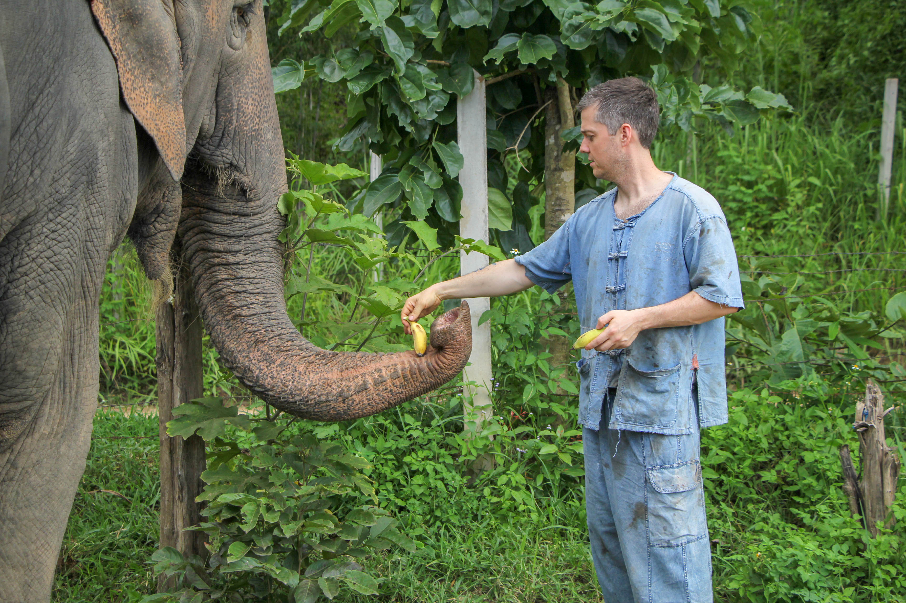

Fast Stats
Age: 38
Professional Experience: 10 Years
Years Programming: >1
Preferred Language: Java
The Past
I grew up in the jewel of Oakland County known as Wixom. After graduating high school and college I moved to New York City to pursue a career in advertising. At the time I knew no one in the city and had about $2,000 to my name and a duffle bag full of clothes that included one interview suit from Men's Warehouse. The apartment I rented sight unseen off Craigslist turned out to be a walk in closet with a single mattress on the floor. It took about 3 weeks, but I was able to land a job working for a "test" wage and started my career. 7 years later my walk in closet had turned into a nice doorman building with a pool and a view of Queens. Toward the end of my time in NYC I was traveling so much to Detroit and Chicago that it no longer made sense to pay sky high rents for a place I was never at. I was able to transfer back to Detroit and bought a house. About a year later I landed my dream job at Amazon and worked there for roughly 4 years. During this entire period I was working to build a portfolio of rental properties and pay off any lingering debt. At 37 I was able to retire from media and live off my investments.
The Present
After a year and a half of trying on different hats to ward off the boredom (Handyman, Bartender, DoorDasher, Freelance Writer,) I couldn't find anything that suited me and ended up back consulting for a company that manages Amazon seller central accounts. Knowing this was taking a step backwards, I decided to look into a dream of mine that I had set aside long ago and see if I could take a realistic shot at learning to program computers. I looked into several different schools, but found that Grand Circus offered the deep dive into a specific language that I was looking for and I was able to take all classes remotely. I am roughly half way through my Java bootcamp and I can already tell that I was built for this. The puzzle solving, the thrill of solving a tough challenge, even the maddening time wasted on finding an out of place semi colon have all been wonderful. I find myself working until 8-9pm on some projects and then googling side challenges to keep going. I can't wait for what the future holds as I continue down this journey.
The Future
As I complete the first phase of my journey, I can't help but look to the future and try to figure out the best way to keep moving down this path. I hope to land a full time remote development position at a company that encourages further language development and can help me grow as a developer. I fully understand that while I will have come light years in just twelve weeks, I am still at the first step. I see coding and development as essential survival skills for the future and the thought of being able to build the next wave of technical advancements is beyond exciting. If you are interested in seeing what I've done or where I've been, please check out the about me section above or below.
Contact Info: